日光柔光棚
最低1000元/時
自然光雙棚空間
光嶼沐境延續自然光空間的節奏，日光柔光棚有霧白、拱門、紗簾與高空窗景，日式復古棚有木框、磚紅、灰泥牆與書房感陳設。從拍攝、課程到聚會，畫面與氛圍都能慢慢展開。
一棚留下日光，一棚收進舊時光。
拱形門洞、霧白弧面、大面紗簾與 20 樓窗景，讓自然光先被柔化，再落進人像、花材、選物與生活感細節裡。
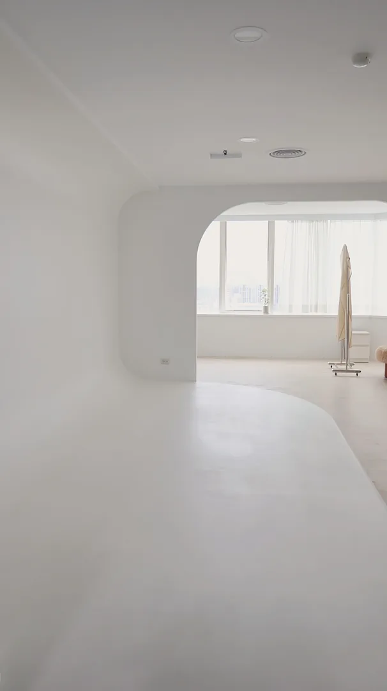
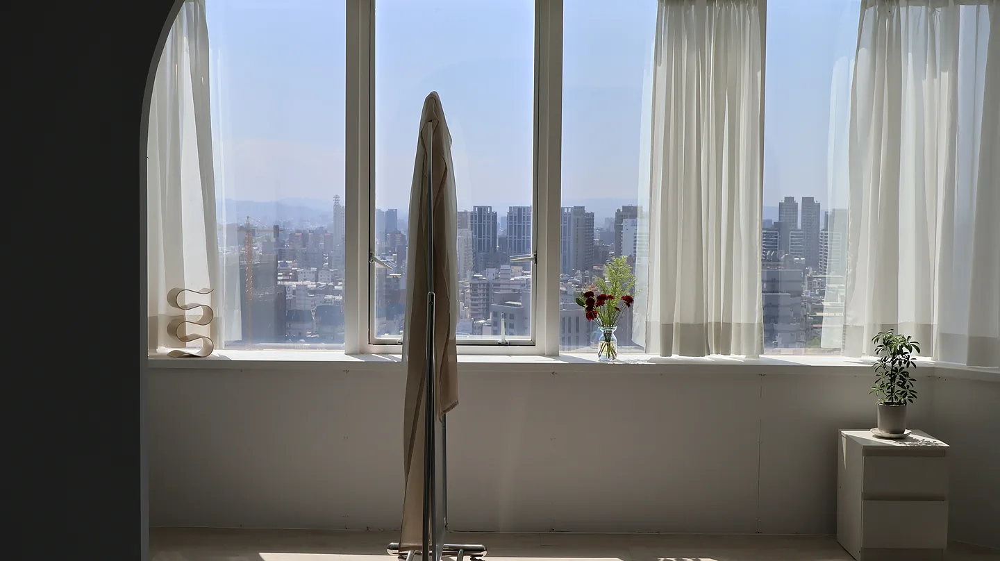
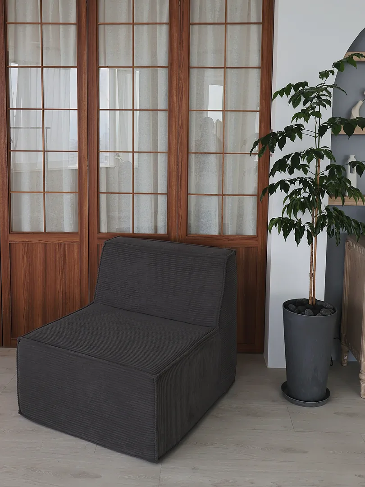
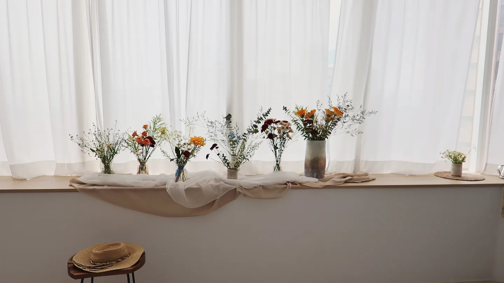
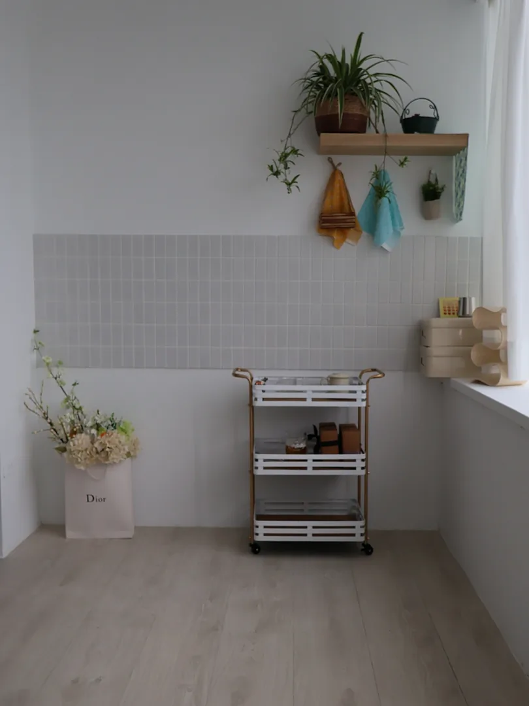
Additional Frames
把窗邊、花器、層架、木框拉門與白底端景收進同一段柔光語氣，拍全景也好，拍細節也好，都有一致的節奏。
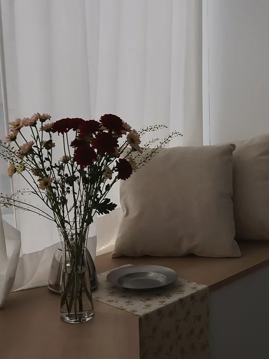
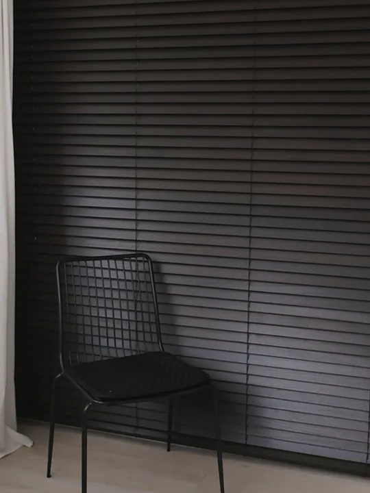
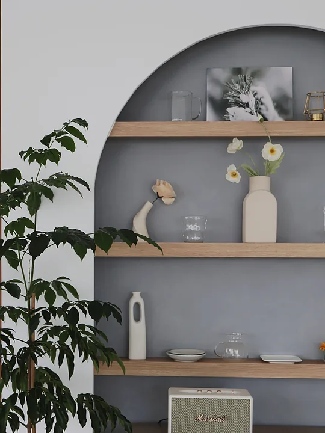
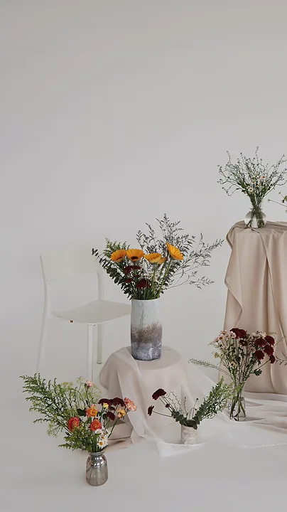
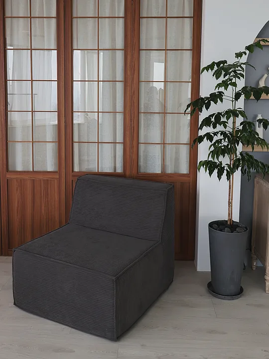
曲面牆角與拱形開口讓畫面更乾淨，無論人像、花藝或日常感陳設都容易取景。
高空市景搭配大片窗面與紗簾，日間採光穩定，也保留空間本身的通透層次。
自然光棚拍、人像寫真、選物拍攝、花藝手作課程與溫柔日常紀錄。
木框門片、磚紅半牆、灰泥牆、書桌、書櫃與皮沙發，把畫面從明亮轉向沉穩，讓空間更有生活感與安靜的復古表情。
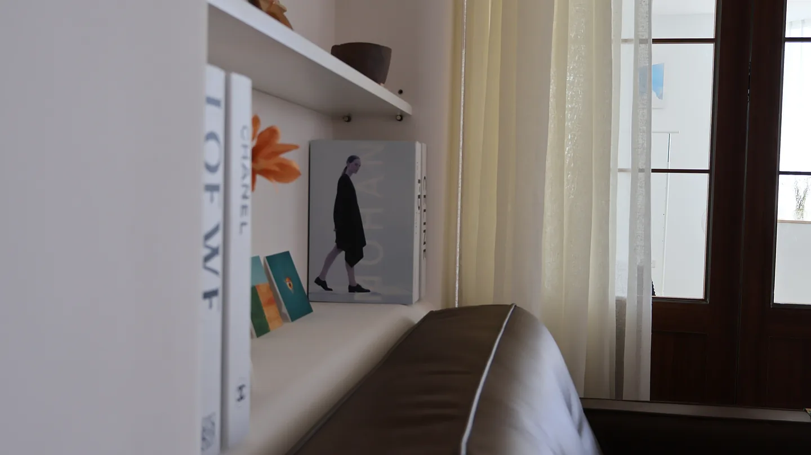
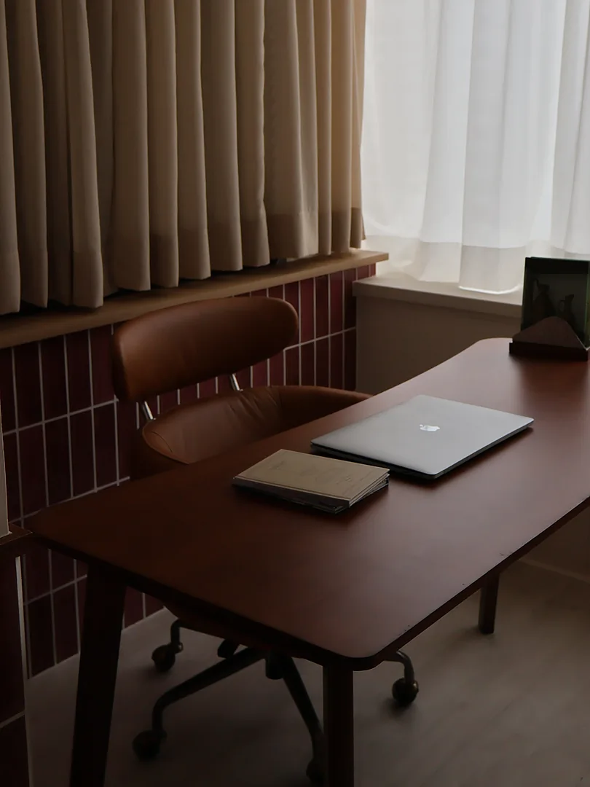
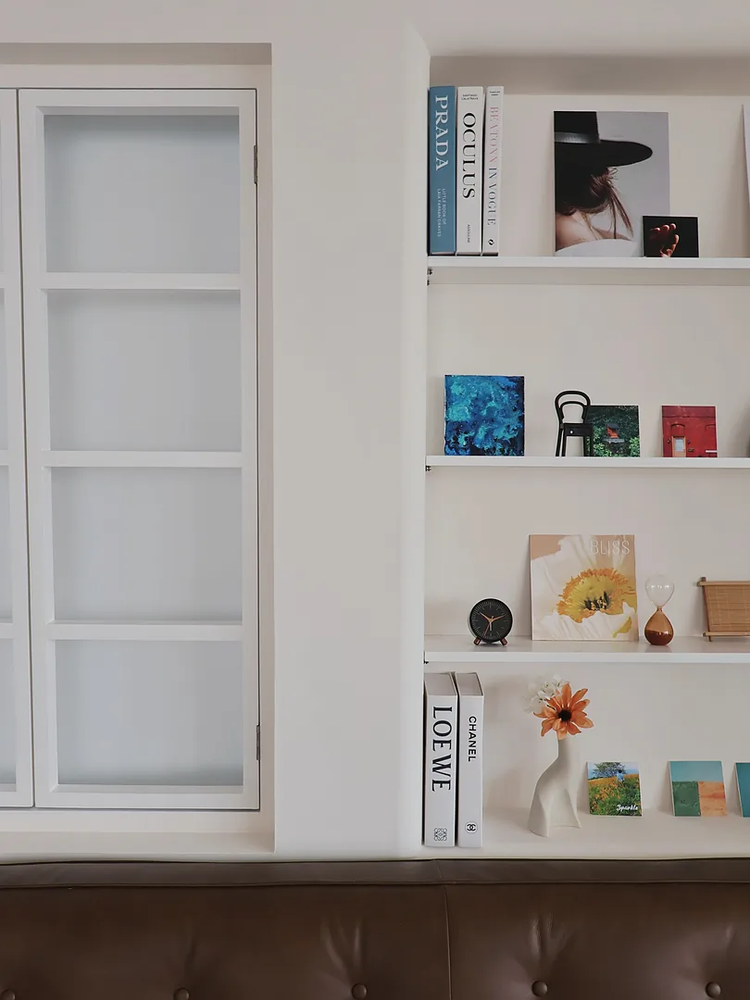
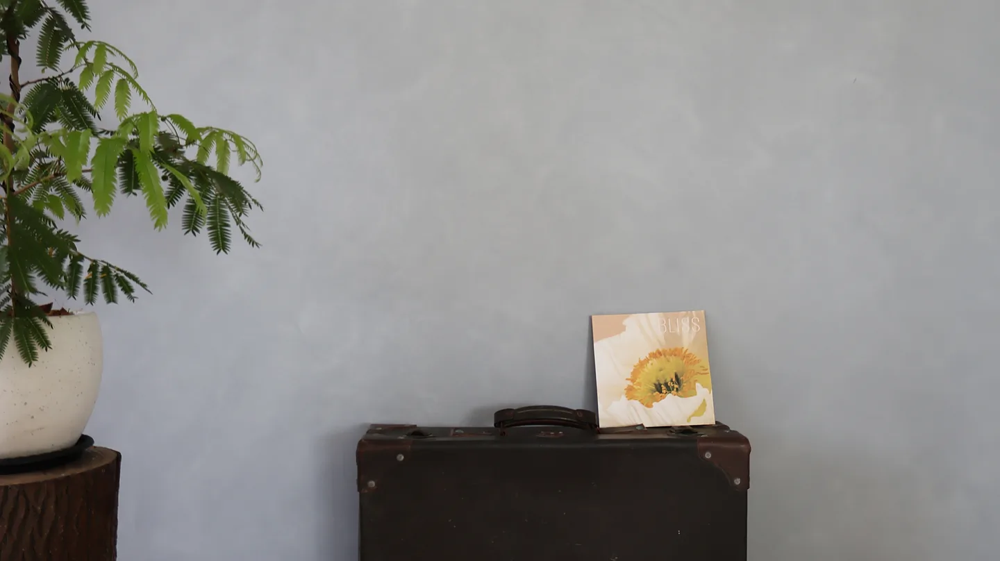
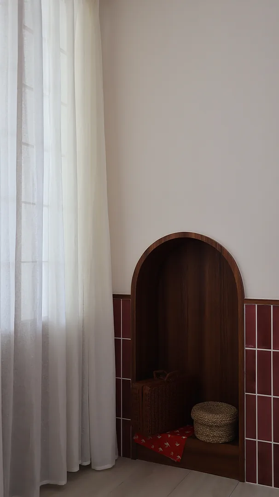
木框門片、書桌與磚紅半牆自帶溫度，不需要太多佈置就能形成完整畫面。
書櫃、畫冊、皮沙發與灰牆端景，讓畫面自然帶著安靜、沈穩的生活氣味。
風格棚拍、人物紀錄、選物展示、內容拍攝、小型課程與聚會活動。
Soft Opening
2026/03/31前，試營運優惠
日光柔光棚
最低1000元/時
日式復古棚
最低800元/時
Social Channels
歡迎直接預約場勘、詢問檔期。
LINE Official